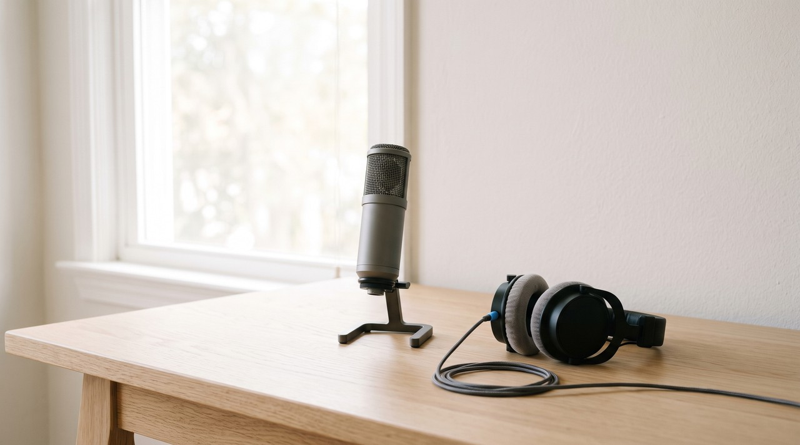
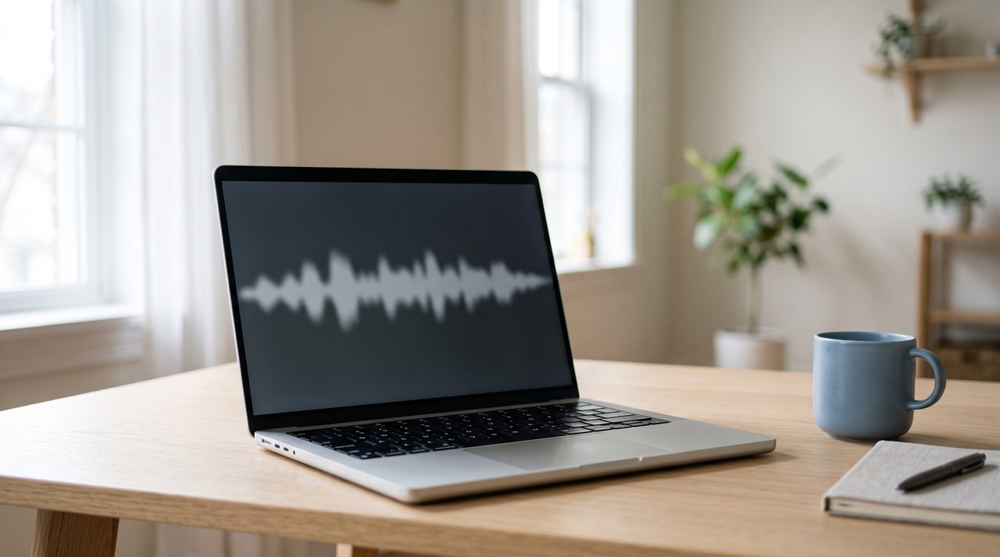
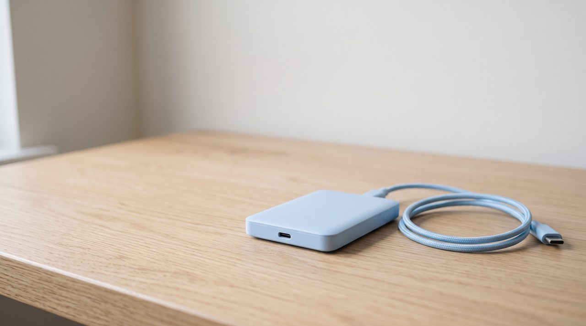

You can clone a voice from a YouTube video if it is your own voice or the person speaking has given you permission. YouTube has rules that say you can only download files using the tools they provide. Channel owners use the Studio download or Google Takeout instead of a ripper site because of this rule. Google Takeout gives you the original files you uploaded, and these untouched files will train a noticeably cleaner clone than the streaming audio.
By Inam, who built VoiceClone and pulls his own old uploads back off his own channel to do exactly this. More of my engineering write ups live at designesh.com. Last updated 18 September 2026.
You have a video on YouTube and you want to turn the voice in it into a clone you can type into. This might be your own channel from three years ago when you had a good microphone and a quiet flat. Or it might be a video from somebody else and you just like how they sound.
Both of those situations look the same to you because you are looking at a page with a play button on it. But they are very different situations. The one you are in decides if you are allowed to do this and if the clone will actually sound good at the end.
If the voice on the channel belongs to you, you can go ahead and clone it, but if it is somebody else's voice you should not do it unless they have told you yes.
There is another thing you should know before you start. Many guides tell you to paste your video link into a downloader site, but you should skip that step. Google will give you the exact files you uploaded with none of YouTube's compression added to them. A clone trained on these original files sounds much cleaner than one trained on a downloaded rip, and that good copy is sitting in your Google account right now.
Are you actually allowed to take audio off YouTube?
There are two different rules at play here. It helps to look at them separately, because one rule is about YouTube and the other rule is about the person speaking in the video.
The first rule is YouTube's own rulebook. Its Terms of Service include a section called Permissions and Restrictions, and this says you cannot download anything from the service unless YouTube provides a feature to do it, or the rights holder has given written permission first. A downloader site operates outside these terms even if you made the video. This is a contract between you and YouTube, and YouTube gives you two proper ways to download instead. Both of these ways only work for videos you uploaded yourself.
The second rule belongs to the person speaking, and this one carries weight. YouTube has a Protecting your identity page where a person can ask to take down a video if AI has been used to make something that looks or sounds like them. The person or their legal representative has to make this complaint directly. It is their decision entirely, and nobody else can press that button for them.
You should know where this is heading because things will change within the year. YouTube has an automatic scanner called likeness detection that searches for synthetic copies of an enrolled creator, but right now it only matches faces. YouTube explains on its help page that this detects face matches and they are working to extend it to audio in 2026. Voices are not being scanned yet, but that gap is closing soon. You can read about the wider legal picture in is voice cloning legal.
Why does a clone trained on YouTube audio sound worse?

Most people never think about this first point because they have no reason to. The audio you hear when you press play on YouTube is actually YouTube's own copy and not the exact file the creator uploaded.
YouTube re-encodes a video when it goes up so it can send the right version to a phone on a weak connection or a desktop on fibre. Its upload guide asks creators for AAC-LC or Opus at 48 kHz, and those are compressed formats right from the start. Compressed audio means maths has squeezed the file by throwing away tiny details it thinks your ears will miss. YouTube squeezes its own copies again to deliver them, and a downloader site will often squeeze that delivery copy a third time before you get it.
You will not notice any of this when you are just listening. But it matters a lot for voice cloning because the AI model is learning the fine texture of your voice rather than the words you say. It learns the little intake of breath before a sentence and the rasp on a long vowel. Compression throws away exactly this detail first, and that missing detail is one reason an AI voice ends up sounding robotic.
The codec is the software that compresses the file, and that is only the first problem. A YouTube video comes with three more issues, and all three of them cause more damage to a clone than the encoding does.
- Music under the voice. Many uploads have background music playing the whole time. If you train on that audio, the clone learns the music as a part of your actual voice, and you will hear a strange tonal shadow under every line the clone speaks.
- The edit. A talking head video usually has a cut every few seconds. This means your natural speaking rhythm has been chopped up and put back together, and the model will learn that choppy pattern as your normal way of speaking.
- Processing you cannot undo. The creator probably used audio tools like a compressor, a noise gate and an EQ to change how they sound. These effects are baked into the file along with the sound of the room they sat in. Baked in means these sounds are permanently part of the recording, and no software tool can pull them back out cleanly.
| Where the audio comes from | What you actually get | Good enough to train on |
|---|---|---|
| A downloader site | YouTube's delivery copy, usually squeezed once more by the site | Last resort only |
| YouTube Studio download | An MP4 YouTube re-encoded at 720p or 360p, five per 24 hours | Usable, not ideal |
| Google Takeout | The original file you uploaded, with no YouTube processing on it | Yes, this is the one |
| The raw recording on your own disk | Your voice before any upload touched it | Best of all, if you still have it |
How do you get clean audio out of your own channel?

Here are the five steps to do this, and people usually skip the first one.
- Check your own hard drive first before going online. The original file you uploaded is better than anything you can download later, and you can often find them in old project folders or phone backups. Searching for two minutes now might save you from having to do the rest of this list.
- Then visit Google Takeout. You can open takeout.google.com, clear all the selections, tick YouTube and YouTube Music, and choose the video files. Google will send you the original file for each upload exactly the way you sent it, so it avoids the transcoding step YouTube runs before a video goes live. This file is the closest thing to your master recording that you will find online.
- Use the Studio download feature if you only need one video. Go to Content in YouTube Studio, open the three dot menu on the video and click Download. You will receive an MP4 file at 720p or 360p based on its size, and YouTube limits you to five downloads in 24 hours. This file is a YouTube re-encode so it will be a step below Takeout quality, but the download is very fast. Keep in mind that some videos will not download, like those with copyright or Community Guidelines strikes, ones with preapproved audio tracks, and any videos that have been removed.
- Take the audio track out of the video file. Any video editing software can export the audio separately, and you can also use ffmpeg if you are comfortable typing in a command line. You should export the audio without re-encoding it if your tool has that option, because you do not want to add your own compression squeeze right at the end.
- Now pick your best minute or two, and give this part your full attention. This step decides how your final clone sounds even more than the original recording did. I explain a full method for this in how to record a voice sample that clones well, and you can find the honest numbers about file lengths in how much audio you really need.
I have learned one thing about choosing your audio stretch from my own videos, and I have never seen it written down before. Avoid using the intro of your video. The first thirty seconds of an upload is usually a higher and faster presenter version of you performing for the camera. If you clone that performance, every single line it makes will sit at that exhausting high pitch and it will sound nothing like your normal voice. You should find a stretch in the middle where you have settled down to explain something to one person. Look for solo speech at a normal pace, with no background music, no laughing, and nobody talking over you.
What if the YouTube copy is the only copy that still exists?
Sometimes your hard drive has died, or your channel is older than the computer sitting on your desk. Sometimes the person speaking is gone and a few uploads are the only things left. That situation is why I built a way to save a voice properly before you actually need it, but I know that tool is not much help to someone who needed it last year.
This is the honest position you are left with. A clone trained on a compressed rip will always be worse than one trained on a master file, and cleaning the audio does not change that fact. You should definitely cut out any stretches with music underneath them. You should also find the calmest and cleanest solo minute in the whole archive. But you cannot put the lost detail back into the recording, because the encoding process removed it and it is gone.
A worse clone still has value, and I would rather you have a slightly soft clone of a voice you care about than nothing at all. You should take the best source file you can get and cut it properly. If you keep your expectations honest, the final voice will very likely sound closer than you expect.
When is somebody else's voice actually allowed?
You can clone another person when they have told you yes in writing, and you should not do it before they agree.
People often make the mistake of thinking that public means available for them to use. When somebody puts a video on the internet they are publishing it, but they are not giving you a license to use it in new ways. Their voice stays their own property when they press upload, just like their face does.
You can do this cleanly in a few ways. A client might hire you to produce a voiceover and send you their own recordings to use. A colleague might sign an agreement to lend their voice to your project. Or a company might own a recording while also having the speaker's clear consent on file. The important part is that the permission came directly from a person before any cloning started.
Even when you have permission, you should ask the person for their own good recordings instead of taking audio from their channel. Somebody who agrees to this process will happily talk into a phone for two minutes. Those two clean minutes of audio will beat an hour of their published videos every single time.
There is one last thing to do, and it costs nothing. You should tell people a clip is AI made when it could pass for a real recording. I use my own cloned voice in my own videos, and telling my audience has never cost me a single viewer.
FAQ
Can I clone a voice from a YouTube video with just the link?
Several sites offer this service, and their software is simply downloading the video for you behind the scenes. This is exactly the step YouTube rules do not allow. If you own the channel, Google Takeout gives you much better audio than these sites provide. If you do not own the channel, holding the link is completely different from having the right permission to use it.
How much YouTube audio do I need to train a voice?
You need the same amount of audio as you would from any other source. A clean file matters far more than a long file here. Two good minutes of a person speaking alone will beat twenty minutes of heavily edited video that has music playing in the background.
Will YouTube detect a cloned voice in my video?
YouTube will not detect it automatically today. Their likeness detection only checks for an enrolled creator's face right now. But YouTube says on its help page that they will extend this tool to cover audio during 2026. A real person can already use the privacy complaint process to report a synthetic copy of their voice, so you can still face consequences even without an automatic scanner.
Is it legal to clone a voice from a public YouTube video?
A creator publishing a video does not mean they are licensing their voice to you. Many places now have specific laws for voice and likeness that sit on top of normal copyright rules. You should follow the safe line I built into this tool: only clone your own voice, or a voice where the owner has clearly told you yes.
Hear your own voice come back.
The free Windows app clones and fully trains one voice, yours, on your own PC. No account, no upload, and the download starts right away.